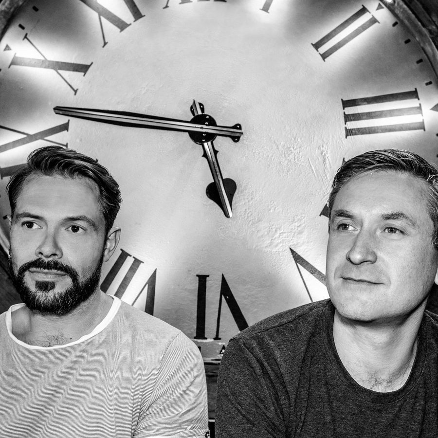

Plump DJs Wrap up Their Year With Monster Breakbeats on “Keep a Focus”


Veteran duo Plump DJs have been leaders in UK-style breaks, bass and electro for nearly 20 years, pioneering the sound to huge success at the turn of the millennium as part of the legendary Finger Lickin’ Records, while also keeping the fire going with their own Grand Hotel label. Next to Stanton Warriors, the Plumps remain one of the most revered and enduring names in breakbeat, and they’re here to drop another massive track on the Stanton’s own Punks label to wrap up their year.
“Keep a Focus” features everything that makes UK-style breaks amazing, and it demonstrates why the Plumps have always been considered such elite operators in this regard. It’s got plenty of funk and ravey synths—plus, an inspired hip-hop vocal grab. What really does the damage, though, are those monstrously heavy beats, which remain just as powerful as ever. Listen, and feel the earth shake beneath you.
Available December 1 via Punks Music.
Follow Plump DJs on Facebook | Twitter | SoundCloud
Follow Punks Music on Facebook | Twitter | SoundCloud